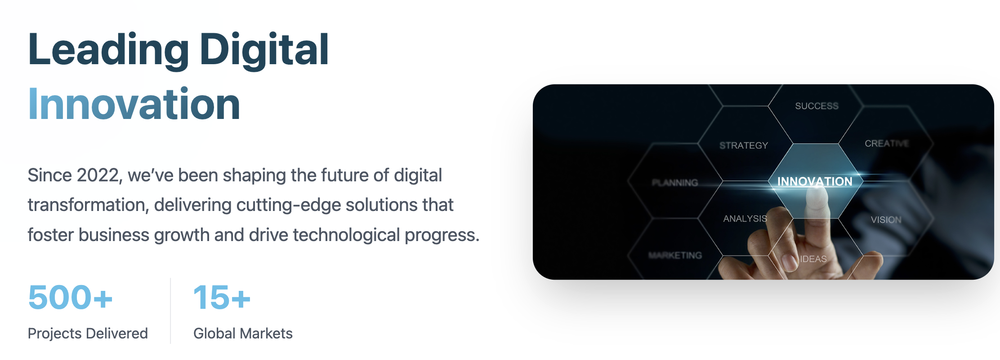

A sneak peek into my Projects
Curious to see what I’ve been building? Here’s a glimpse. Dive into my full case studies to explore the details behind each design.


From zero-to-system, I build digital tools that work hard and feel
simple. If users love it and the devs don’t cry,
that’s my kind of success.
Curious to see what I’ve been building? Here’s a glimpse. Dive into my full case studies to explore the details behind each design.
Get a closer look at the projects where I rolled up my sleeves, asked
the
right Questions, and made complexity feed simple
Designed a responsive website for a healthcare startup, focused on clarity, trust, and patient-first navigation.
View Case StudyBuilt a modern, clean digital identity for a tech-forward company, blending visual storytelling with functional design.
View Case StudyArchitected a first-ever ad scheduling system from scratch, turning complex campaign logic into a user-friendly experience.
View Case Study
Every project is unique, but the path to great design is built on a clear and thoughtful approach.
I dive deep into user needs, business goals, and industry context through research and interviews.
I synthesize insights to craft a clear problem statement, identify pain points, and outline key user journeys.
This is where ideas spark. I explore creative solutions and brainstorm features that elevate the experience.
I translate concepts into wireframes, flows, and UI designs, balancing functionality and aesthetics.
A UX/UI designer with 5+ years of experience turning complex systems into simple, human-centered interfaces. My work spans industries like healthcare, ad tech, and digital platforms, always grounded in strategy, empathy, and purpose-driven design.
But creativity doesn’t end at the screen. Outside of UX, I craft hand-poured candles, a reminder that great design can take many forms. Whether I’m shaping a user journey or blending a new fragrance, I believe in creating experiences that feel intuitive, thoughtful, and beautiful.
Get in TouchRecommendations from my previous employers who’ve seen my work in action.
Jagriti’s creative insight and user-centered approach made a lasting impact on our product’s success.
Vishal Sharma
CEO, 101 Healthcare
Her ability to translate complex ideas into intuitive, consistent designs was transformative at MapleCode.
Akshay
Founder, MapleCode Innovations
Jagriti’s attention to detail and passion for design made her an invaluable part of our team.
Michael Phillips
Co-Founder, Source